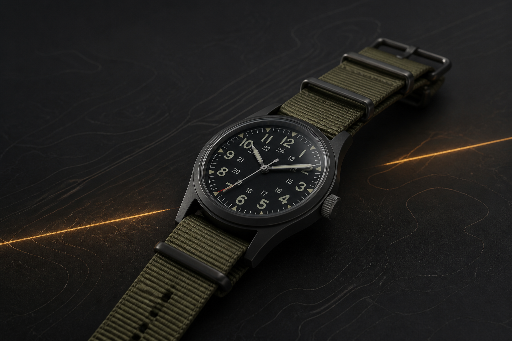

왜 다시 36 mm인가
큰 시계가 익숙한 시대에, 오래 착용해도 부담이 없는 크기를 다시 살펴봅니다.
곧 공개합니다MWC FIELD INSTRUMENTSEST. 2026
군용 시계의 목적과 비례를 오늘의 일상에 맞게 다시 설계합니다.

내 소개 / THE MAKER
사진과 이름은 준비되는 대로 이곳에 추가할 예정입니다.
오래된 군용 시계 한 점에서 MWC 시계는 출발했습니다. 장식을 덜어낸 다이얼, 어떤 상황에서도 빠르게 읽히는 숫자, 그리고 손목에 부담이 없는 크기.
우리는 그 시계가 가진 명료한 태도를 좋아합니다. 과거를 그대로 복각하기보다, 오늘 매일 착용할 수 있는 재료와 균형으로 다시 만듭니다. 설계와 조립 과정은 작은 단위로 기록하고, 제품이 완성되어 가는 이야기도 투명하게 나누겠습니다.
대표 제품 / FIELD WATCH
1980년대 미군 보급 규격에서 영감을 얻은 컴팩트 필드 워치. 필요한 정보만 남긴 다이얼과 무광 케이스, 교체가 쉬운 패스스루 스트랩으로 구성했습니다.
첫 번째 생산 준비 중
출시 일정과 가격은 곧 공개됩니다.
이야기 / FIELD NOTES
스케치, 소재 테스트, 빈티지 필드 워치에 대한 기록을 차근차근 나눕니다.
큰 시계가 익숙한 시대에, 오래 착용해도 부담이 없는 크기를 다시 살펴봅니다.
곧 공개합니다한 장의 군용 규격표에 담긴 가독성, 내구성, 생산성의 기준을 따라갑니다.
준비 중한 장 구조의 나일론 스트랩이 현장에서 선택된 이유와 현대적인 개선점을 기록합니다.
준비 중연락하기 / CONTACT
제품 문의, 협업 제안, 혹은 필드 워치에 대한 이야기를 보내주세요. 확인 후 천천히, 직접 답장하겠습니다.
EMAIL hello@mwc-watch.kr ↗현재 이메일 주소는 임시 주소입니다. 실제 연락처가 정해지면 교체해 주세요.